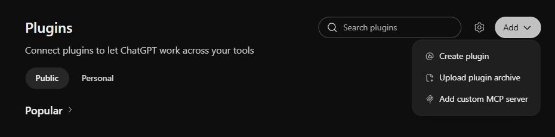
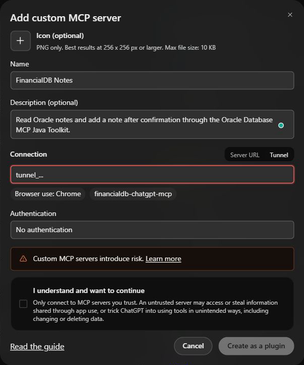
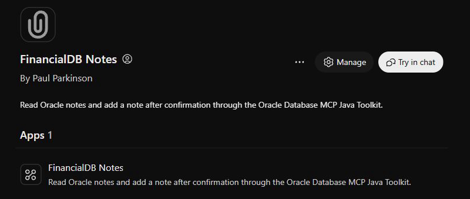
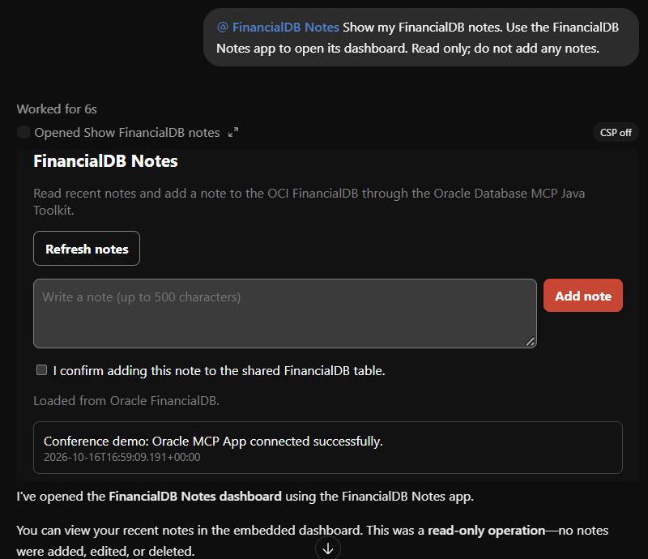

Watch the conference walkthrough
Download the conference MP4 · SRT captions · Narration
The walkthrough shows Add custom MCP server, Tunnel settings, creation and connection instructions, and Try in chat, followed by real repository source and the working dashboard inside ChatGPT with the installed FinancialDB Notes plugin and a successful live Oracle refresh. Both hosts use the actual app bundle. The private Secure MCP Tunnel must remain running for ChatGPT tool calls.
MCP server connection reference
A tunnel is needed when ChatGPT cannot directly reach the MCP HTTP endpoint, whether using tools only or MCP Apps. A reachable HTTPS endpoint needs no tunnel. The Oracle MCP server provides the database tools; the MCP Apps layer provides the dashboard/UI.
| MCP server type | Value in ChatGPT’s connection dialog |
|---|---|
| Oracle Database MCP Java Toolkit + this Notes app (primary example) | Tunnel: your tunnel_... ID. |
| DB Tools Python sample | Server URL: your stdio-to-HTTP bridge’s HTTPS URL, or its Tunnel ID. |
| SQLcl MCP | Server URL: your stdio-to-HTTP bridge’s HTTPS URL, or its Tunnel ID. |
| OCI Database Tools MCP (managed service) | Server URL: copy from OCI Console → MCP server → Clients → registration details. |
| Autonomous AI Database MCP (Select AI Agent tools) | Server URL: https://dataaccess.adb.<region>.oraclecloudapps.com/adb/mcp/v1/databases/<database-ocid> |
| ORDS MCP | Server URL: https://<ords-host>/mcp |
| Database Navigator Builder-generated MCP | Server URL: deployed HTTPS endpoint from the generated server’s README (HTTP mode), or its Tunnel ID. |
For this primary example, the tunnel client targets http://127.0.0.1:3001/mcp; enter the tunnel ID, not that loopback URL, in ChatGPT. Stdio processes have no Server URL until bridged to HTTP. Remote services require compatible authentication and network access; the Autonomous URL shown is its public-endpoint form. Hosts and IDs are placeholders. Other backends are alternatives, not tested connections in this demo.
For a custom dashboard on any backend, connect ChatGPT to the MCP Apps layer’s HTTPS URL or tunnel ID instead of the database-only endpoint. Our Node app supplies that layer for the Java Toolkit; a generic HTTP bridge supplies transport but does not create a dashboard. The existing walkthrough remains focused on the Java Toolkit.
What must stay running for this plugin to work?
This local-process explanation applies to the Java Toolkit demonstration. A directly connected, remotely hosted ORDS server uses its own server deployment instead.
Both Java and Node.js must run, plus the OpenAI tunnel client. The plugin uses this chain:
ChatGPT plugin
↓ private tunnel
Node.js MCP App server
↓ starts and manages
Oracle Database MCP Java Toolkit
↓
Oracle database- Node.js serves the plugin’s tools and embedded dashboard.
- Java Toolkit connects to Oracle and executes the SQL. The Node server starts it automatically as a child process.
- Tunnel client lets ChatGPT reach your local Node server.
From the repository root, keep these running in two PowerShell windows:
# Window 1: starts Node and its Java Toolkit child
.\chatgpt\run.ps1 -Profile OCI# Window 2: connects ChatGPT to the Node server
.\chatgpt\connect-tunnel.ps1 -TunnelId YOUR_TUNNEL_IDnpm is the package/build tool, not another service you need to keep running. You also don’t need a separately launched Java HTTPS server with this configuration.
If this computer sleeps or either window closes, the installed plugin remains in ChatGPT, but its database calls stop working. The downloaded demo video works independently.
Add the MCP App as a ChatGPT plugin
The installation walkthrough below shows the actual ChatGPT interface. The settings form was reopened for this explanation and uses tunnel_... instead of a private identifier. The installed plugin and working dashboard are real. No duplicate plugin was created for these screenshots.
- Start the app and private tunnel. Build the app using the Windows commands below. Leave
.\chatgpt\run.ps1 -Profile OCIrunning in one PowerShell window. In a second window, from the repository root, run.\chatgpt\connect-tunnel.ps1 -TunnelId tunnel_..., replacing the placeholder with your tunnel ID. A runtime key is an OpenAI API key used by the tunnel client; it is separate from your Oracle password. Supply it at the hidden prompt or through the ignored.envvariableCHATGPT_KEY_FOR_MCPAPP_PLUGIN. Runtime permissions need Tunnels Read and Use. Keep both processes running and verify thathttp://127.0.0.1:8766/readyzreturnsready. - Open ChatGPT Plugins. Choose Add → Add custom MCP server.

Choose the custom MCP server entry from the Add menu. - Configure the connection. Enter FinancialDB Notes as the name and a short description. Select Tunnel and enter the same tunnel ID used by your running client. Select No authentication for this private demo, whose transport uses the authorized tunnel. This option does not add app-level OAuth.

Illustrative configuration: replace the placeholder with your own tunnel ID. Creation remains disabled in this screenshot because it is only a draft. - Create and connect. Read the access warning, check I understand and want to continue, and select Create as a plugin. ChatGPT initializes the MCP server and discovers its tools. Complete the Connect FinancialDB Notes prompt when shown. If setup fails, confirm tunnel readiness and run both smoke checks below before retrying.
- Try it in a conversation. The installed plugin page offers Try in chat. Select it, or select FinancialDB Notes with
@in a new conversation, and sendShow my FinancialDB notes. Open its dashboard. Read only; do not add any notes.

The actual installed plugin, ready to open in chat. - Verify the live result. The dashboard should say Loaded from Oracle FinancialDB. Select Refresh notes to test the interactive bridge. The saved demonstration below shows the approved conference note returned from Oracle.

Successful rendering and a live database read complete the connection test.
To review this article on another machine, pull this repository and open chatgpt/blog.html. The screenshots, narrated MP4s, poster, and captions are included in Git. You can play chatgpt/video/oracle-chatgpt-walkthrough.mp4 directly without database credentials. For browser caption tracks, serve the article over HTTP, for example python -m http.server 8000 --directory chatgpt, then open http://localhost:8000/blog.html.
Follow the request from the app to Oracle
ChatGPT or the local MCP App test host
→ Streamable HTTP /mcp on loopback
→ server.ts: named tools and bundled UI resource
→ Oracle Database MCP Java Toolkit over stdio
→ toolkit-tools.yaml: parameterized SQL
→ Oracle CHATGPT_NOTES tableThis sample lives in the AI Fullstack Toolkit repository and delegates database execution to its vendored Oracle Database MCP Java Toolkit. It does not route these notes through the Java framework's approval gate or its simulator backends.
show-financialdb-notes is the model-visible, read-only entry point. It returns the latest 50 notes and references ui://financialdb/chatgpt-notes-v1. The app-only refresh and insert tools use the official MCP App bridge. The ChatGPT server uses the MCP v2 dual-era HTTP handler to support both protocol 2026-07-28 and legacy initialization. The Oracle Toolkit connection retains its legacy handshake. A person must check the confirmation box before the UI sends an insert.
The checkbox is a UI confirmation, not server-side authorization. App-only visibility guides compatible hosts; it is not an access-control boundary for an arbitrary MCP client. This private demo must remain behind the authorized tunnel. A production service needs authenticated callers and a server-enforced approval policy appropriate to its writes.
Use the repository environment file
The new cross-platform configuration reader loads the root .env, then optional chatgpt/.env, then process-environment overrides. It defaults to the OCI profile; set CHATGPT_DB_PROFILE=GCP to select GCP. Explicit DB_URL, DB_USERNAME, and DB_PASSWORD override the selected profile. Values are parsed literally without executing shell commands.
Only the Oracle child process receives the selected database credentials. The tunnel runtime key is excluded from database configuration loading and from that child's environment. A valid local wallet path is used when present. The configured JDBC descriptor is preserved when no local wallet exists; whether that works depends on the database's TLS configuration.
Build and verify on Windows
Install JDK 17+, Maven 3.9+, and Node.js 22.12+ with npm. From the repository root:
mvn -f upstream/oracle-db-mcp-java-toolkit/pom.xml package
cd chatgpt
npm ci
npm run doctor
npm run build
npm test
$env:CHATGPT_DEMO_HOST = '1'
.\run.ps1 -Profile OCIIn a second terminal, run npm run smoke from chatgpt/, then open the local demonstration host. The smoke test initializes MCP, discovers all three tools, calls the read and app-refresh tools against Oracle, and reads the app resource. Add -- --modern to test protocol 2026-07-28 as well as the default legacy handshake. It performs no writes. Existing note contents are hidden in the recording host; the normal ChatGPT app displays the queried notes.
On October 16, 2026, the OCI connection probe, notes read, app resource, and full ./build_all.sh reactor build passed on this Windows workstation. FinancialDB Notes was also installed and connected in ChatGPT; dashboard opening and interactive refresh returned the persisted conference note without additional writes. The CHATGPT_NOTES table already existed, so no schema setup was needed. On another database, run database/setup.sql once in the intended demo schema before using the notes tools.
Connect the private plugin to ChatGPT
- In OpenAI Platform tunnel settings, select a tunnel associated with the intended ChatGPT workspace. Reuse a suitable existing tunnel. Tunnel management needs Read and Manage permissions; runtime use needs Read and Use.
- Install the official tunnel-client. With the local app running, execute
.\chatgpt\connect-tunnel.ps1 -TunnelId tunnel_...from the repository root. Enter an existing runtime key at its hidden local prompt, or use the explicitly configuredCHATGPT_KEY_FOR_MCPAPP_PLUGINin the ignored root.env. The launcher reads that variable only for the tunnel process. Keep the process running. The script verifies configuration before starting the tunnel. Do not paste the key into chat or a recording. - Check
http://127.0.0.1:8766/readyz. In ChatGPT Plugins, choose Add → Add custom MCP server. Name it FinancialDB Notes, choose Tunnel, and select or enter the same tunnel ID. This sample provides no app-level OAuth; use No authentication only with the authorized private tunnel. - Review the access warning and discovered tools, then create and install the private plugin. In a new conversation, select it with
@and askShow my FinancialDB notes.
Successful rendering and a live notes read in ChatGPT complete the host verification. - For an approved demonstration write, enter a clearly identified demo note, check the confirmation box, select Add note, and refresh to verify persistence.
Follow the current OpenAI Secure MCP Tunnel guide and custom MCP server instructions for account-specific access. Tunnel transport supports private use; public plugin distribution requires a different deployment path.
Keep the walkthrough reproducible
video/scenes.json specifies the scene order, actual browser captures, narration, and captions. video/build.ps1 generates Windows narration, H.264/AAC MP4, SRT, WebVTT, and a poster. Run video/verify.mjs to check the complete decoded video, stream metadata, captions, and blog links. Finished media and reviewed captures are committed alongside the article; intermediate renders, credentials, and tool downloads stay local. The HTML5 player can later be replaced with a YouTube embed while retaining the captions and download links.
See the setup guide and implementation and verification notes for the current transport, credential boundaries, and verified ChatGPT installation.